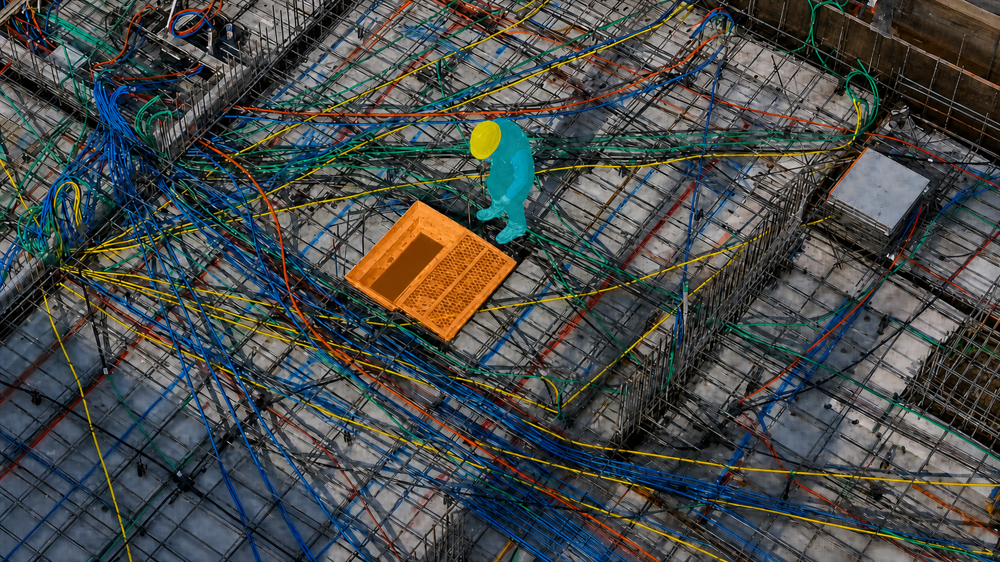
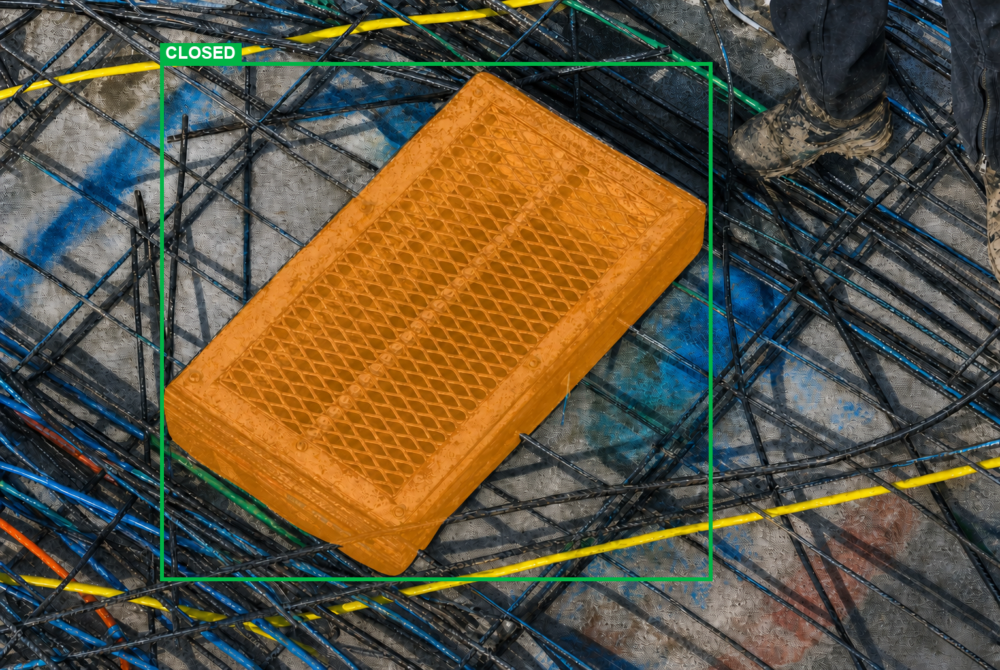
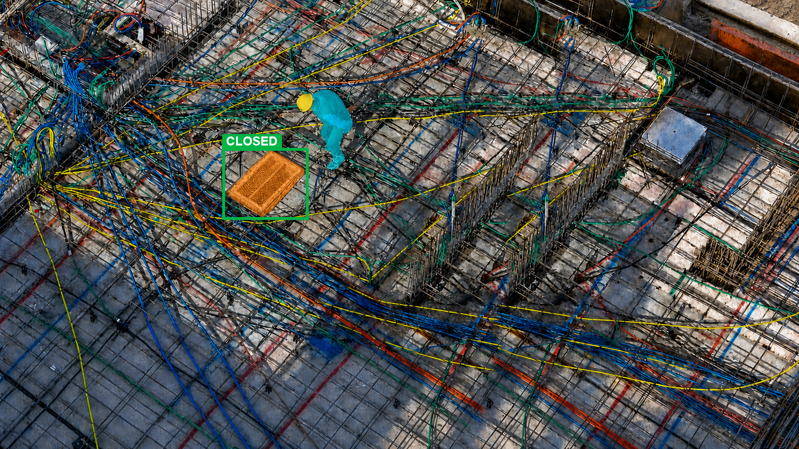

기존 CCTV 연동
기존 CCTV 인프라의 영상 스트림 활용이 가능합니다.
PTZ CCTV 설치가 필요한 경우, 협력사를 통한 장비 구축 진행이 가능합니다.
- 별도 장비 불필요
- 기존 인프라 활용
- 미보유 시 장비 구축 지원
Products
스스로 위험을 쫓고 판단하는 AI 안전관제 솔루션

단순 이벤트 감지에 머무르던 지능형 CCTV를 넘어,
상황을 이해하고 스스로 행동하는 관제 시스템으로 진화합니다.
감지 · 조치 · 기록 전 과정 한 흐름 자동 처리.
법령 대조 결과 · 감지 증거를 자동으로 문서화.
현장 맞춤형 교육자료까지 한 번에.

CCTV 영상을 실시간 분석해 현장 위험을 감지하고, 맥락까지 판단합니다.
주요 위험 유형



01AI 감지 · 픽셀 영역 분리
02위험 판별 · PTZ 줌인
03현장 · 관제 알림 발송
04PTZ 줌아웃 · 정상 복귀
감지부터 조치 확인까지, PTZ가 스스로 화각을 옮기며 따라갑니다.
위험을 감지하면 카메라가 스스로 움직여 사각지대까지 추적합니다.
감지에서 끝나지 않고, 법령 매칭부터 안전서류까지 자동으로 처리합니다.
규정 매칭 실제 사례
현장 데이터
모델 학습
피드백 반영
감지 · 판단
같은 알람이 반복되면 기준을 조정하고, 놓친 위험은 다음 학습에 반영합니다.
현장 데이터와 피드백으로 계속 학습해, 쓸수록 우리 현장에 정교해집니다.
기존 CCTV 인프라의 영상 스트림 활용이 가능합니다.
PTZ CCTV 설치가 필요한 경우, 협력사를 통한 장비 구축 진행이 가능합니다.
주·야간 설정된 주기에 따라 현장을 자동 순찰합니다.
현장 안전 기준에 맞춰 감지 항목과 민감도를 커스터마이징할 수 있습니다.
매일의 위험 감지·조치 이력을 유형별·시간대별로 자동 정리해 보고서로 생성합니다.
우리 현장의 실제 위험 장면과 관련 법령을 엮어, 작업자 맞춤 안전교육 자료를 만들 수 있습니다.
감지부터 조치까지 전 과정을 타임스탬프와 함께 기록해, 점검·감사·중대재해법 대응 시 증빙으로 씁니다.
보유하신 CCTV 모델과 현장 규모를 알려주시면 연동 가능 여부를 확인해 드립니다. PTZ 장비가 없어도 협력사를 통한 구축까지 함께 검토합니다.